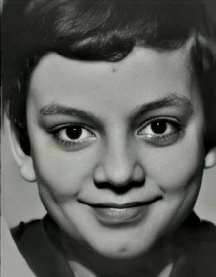

Киркоров, Филипп Бедросович
Биография
Мызыка и творчество
Детство и юность
Биография
Мызыка и творчество
Детство и юность

Филипп Киркоров – яркий представитель российского шоу-бизнеса, творческий потенциал которого безграничен. «Король» поп-эстрады не одно десятилетие покоряет зрителей музыкальными хитами, известными в России, странах постсоветского пространства, Америке и Европе. Болгарско-российский артист популярен как музыкальный исполнитель, талантливый композитор, продюсер и харизматичный актер, не перестающий удивлять публику.
Вернуться назад
В 1987 году музыканта пригласили работать в «Ленинградский мюзик-холл», которым руководил Илья Рахлин. Артист сразу выехал с творческим коллективом на гастроли в Берлин, где выступал в шоу театра «Фридрихштадтпалас». Вернувшись из заграничного турне, Филипп Киркоров осознал, что работа не для него, и покинул мюзик-холл.
В молодости состоялся ряд знаковых для артиста встреч, которые определили его творческое будущее. После ухода из первого коллектива певец познакомился с поэтом-песенником Ильей Резником и с его помощью сделал первые шаги на российской эстраде. На «вернисаже» Резника в 1988 году Филипп Киркоров встретился с Аллой Пугачевой, пригласившей певца участвовать в «Рождественских встречах».
К тому времени начинающий исполнитель успел выступить в Ялте на первом в своей карьере конкурсе и снять клип на песню «Кармен». В этот же период произошло очередное важное знакомство с поэтом Леонидом Дербеневым, который немногим позже написал для певца песни, ставшие мегахитами: «Небо и земля», «Ты, ты, ты», «Ночью и днем», «Атлантида».
Вернуться назад
Филипп Киркоров родился в апреле 1967 года в болгарском городе Варне. Неудивительно, что мальчик с ранних лет приобщился к музыке и актерскому мастерству, ведь он рос в семье артистов. Отец – армянин Бедрос Крикорян – известный в Болгарии певец, работал с Леонидом Утесовым, Юрием Силантьевым, Эдди Рознером. По словам Бедроса Филипповича, фамилию пришлось сменить на Киркоров, чтобы поступить в болгарскую школу. Мать Виктория Марковна Лихачева выросла в семье цирковой артистки и инженера.

Ранние годы мальчик провел на гастрольных выступлениях родителей. В 1974 году семья певца перебралась в Москву, где он пошел в 1-й класс и посещал уроки игры на фортепиано и гитаре, так как уже в детстве мечтал стать известным артистом. Школу Филипп окончил с золотой медалью и отправился в ГИТИС, но попытка оказалась провальной – приемная комиссия отделения музкомедии не оценила вокальные данные абитуриента.
Высшее образование будущий певец получил в Государственном музыкальном училище имени Гнесиных, куда поступил в 1984 году. Через 4 года окончил учебное заведение, получив красный диплом. Будучи еще студентом-первокурсником, в 1985 году выступил в телепередаче «Шире круг», где исполнил популярную в те времена песню «Алеша» на болгарском языке. Так началась творческая биография исполнителя и продюсера в России.
Вернуться назад